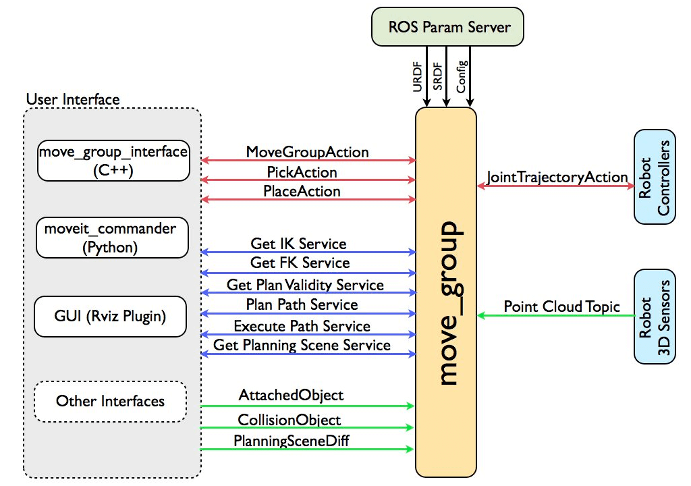
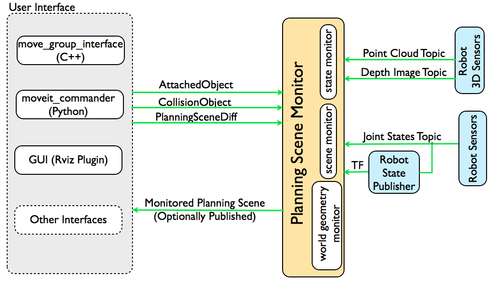

Concepts
The following is an overview of how MoveIt works.

The move_group node
The figure above shows the high-level system architecture for the primary node provided by MoveIt called move_group. This node serves as an integrator: pulling all the individual components together to provide a set of ROS actions and services for users to use.

User Interface
The users can access the actions and services provided by move_group in three ways:
In C++ - using the move_group_interface package that provides an easy to setup C++ interface to move_group
In Python - using the moveit_commander package
Through a GUI - using the Motion Planning plugin to Rviz (the ROS visualizer)
move_group can be configured using the ROS param server from where it will also get the URDF and SRDF for the robot.
Configuration
move_group is a ROS node. It uses the ROS param server to get three kinds of information:
URDF - move_group looks for the robot_description parameter on the ROS param server to get the URDF for the robot.
SRDF - move_group looks for the robot_description_semantic parameter on the ROS param server to get the SRDF for the robot. The SRDF is typically created (once) by a user using the MoveIt Setup Assistant (only for ROS1 at 2022).
MoveIt configuration - move_group will look on the ROS param server for other configuration specific to MoveIt including joint limits, kinematics, motion planning, perception and other information. Config files for these components are automatically generated by the MoveIt setup assistant and stored in the config directory of the corresponding MoveIt config package for the robot.
Robot Interface
move_group talks to the robot through ROS topics and actions. It communicates with the robot to get current state information (positions of the joints, etc.), to get point clouds and other sensor data from the robot sensors and to talk to the controllers on the robot.
Joint State Information
move_group listens on the /joint_states topic for determining the current state information - i.e. determining where each joint of the robot is. move_group is capable of listening to multiple publishers on this topic even if they are publishing only partial information about the robot state (e.g. separate publishers may be used for the arm and mobile base of a robot). Note that move_group will not setup its own joint state publisher - this is something that has to be implemented on each robot.
Transform Information
move_group monitors transform information using the ROS TF library. This allows the node to get global information about the robot’s pose (among other things). E.g., the ROS navigation stack will publish the transform between the map frame and base frame of the robot to TF. move_group can use TF to figure out this transform for internal use. Note that move_group only listens to TF. To publish TF information from your robot, you will need to have a robot_state_publisher node running on your robot.
Controller Interface
move_group talks to the controllers on the robot using the FollowJointTrajectoryAction interface. This is a ROS action interface. A server on the robot needs to service this action - this server is not provided by move_group itself. move_group will only instantiate a client to talk to this controller action server on your robot.
Planning Scene

move_group uses the Planning Scene Monitor to maintain a planning scene, which is a representation of the world and the current state of the robot. The robot state can include any objects attached to (carried by) the robot which are considered to be rigidly attached to the robot. The planning scene monitor listens to:
State Information: on the joint_states topic
Sensor Information: using the world geometry monitor described below
World geometry information: from user input on the planning_scene topic (as a planning scene diff).
World Geometry Monitor
The world geometry monitor builds world geometry using information from the sensors on the robot and from user input. It uses the occupancy map monitor to build a 3D representation of the environment around the robot and augments that with information on the planning_scene topic for adding object information.
3D Perception
3D perception in MoveIt is handled by the occupancy map monitor. The occupancy map monitor uses a plugin architecture to handle different kinds of sensor input as shown in the Figure above. In particular, MoveIt has inbuilt support for handling two kinds of inputs:
Point clouds: handled by the point cloud occupancy map updater plugin
Depth images: handled by the depth image occupancy map updater plugin
Note
you can add your own types of updaters as a plugin to the occupancy map monitor.
Extensible Capabilities
move_group is structured to be easily extensible - individual capabilities like pick and place, kinematics, motion planning are actually implemented as separate plugins with a common base class. The plugins are configurable using ROS through a set of ROS yaml parameters and through the use of the ROS pluginlib library. Most users will not have to configure move_group plugins since they come automatically configured in the launch files generated by the MoveIt Setup Assistant.
MoveIt plugins are: